计算机网络基础
第一讲主要介绍了计算机网络的体系结构、性能、安全以及挑战和机遇。并且还讲了中科院在网络方面的相关工作。
互联网不仅仅改变生活与社会，还推动信息技术本身发展。
物理传输：通信
- 基础对象：bit
- 调制、编码、信道、同步
- 香农定理：$C=Blog_2(1 + \frac{S}{N})$，C：传输速率；B：信道带宽；S/N 为信噪比。
- 调幅、调频、调相
数据传输：包交换
- 基础对象：数据帧
- 存储转发
包交换 VS 链路交换。
数据传输：介质访问控制 MAC（medium access control）
网络互连：异构网络，不同物理寻址机制。
路由与路由查找：路由协议（控制平面）、路由查找转发（数据平面）
可靠性与传输控制：如何在不可靠路径上尽力而为的实现可靠数据传输？无差错、不丢失、不重复、顺序。如何实现拥塞控制？接收窗口（接收端流控）；拥塞窗口（发送端流控）、拥塞判断：丢包、延迟、多指标。
DNS：递归查询
层次结构与实现模块化
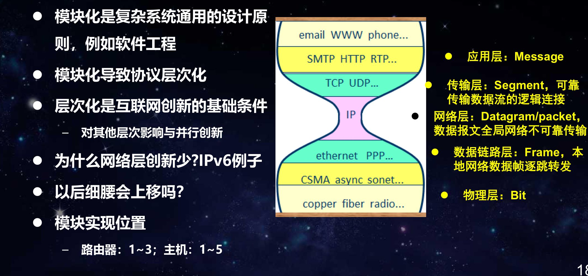
功能放置
// 客户端
SocketFD = socket(PF_INET, SOCK_STREAM, IPPROTO_TCP);
connect(SocketFD, (struct sockaddr *)&sa, sizeof sa);
send() and recv()
write() and read()
close();
// 服务器
listen(SocketFD, QUEUE);
ConnectFD = accept(SocketFD, NULL, NULL);
send() and recv()
write() and read();
close();
报文封装：HTTP Header、TCP Header、IP Header、Ethernet Header。
延迟构成：$T=T_{tras}+T_{proc}+T_{prop}+T_{queue}$
- $T_{tras}=2P/R$：传输延迟
- $T_{proc}$：查找处理
- $T_{prop}$：信号传播延迟
- $T_{queue}$：排队延迟
吞吐量
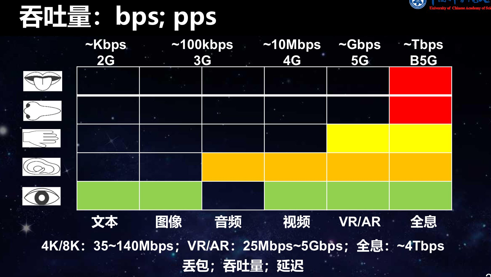
BGP
1989，3 张餐巾纸中的边界网关协议（BGP）图片来源: YAKOV REKHTER/WASHINGTON POST。
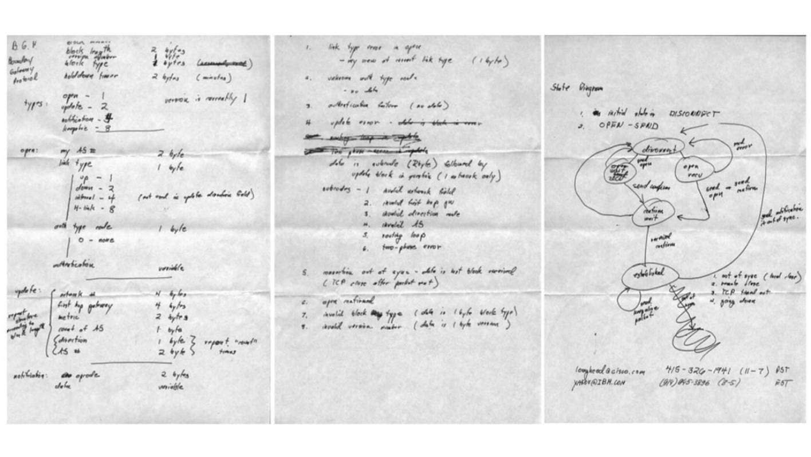
网络的安全性和可靠性：路由安全、DDoS、安全防护困难。
中科院与中国互联网发展
- 1975 年，计算所开始关注网络研究
- 1981 年，计算所成立了网络研究室(十室)是国内最早开始从 事互联网研究的实验室
- 1983 年，中科院与德国弗朗霍夫信息与生物技术研究所合作 研制了 X.25 分组交换网络，十室承担了该项目
- 国内最早开始与国外合作从事的网络研究项目
- 开发了 ISO X.25 底层软件，网络通信和管理软件
- 1989: NCFC
- 1992 年 6 月开始，由十室研究中国域名体系
- 1995 年 3 月，成立计算机网络信息中心
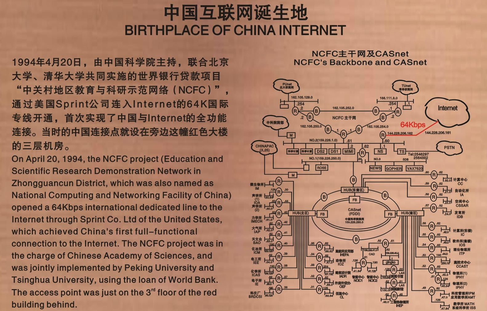
谢老师给学生的一些学习建议：
忘记分数
独立思维 We reject kings, presidents and voting. We believe in: rough consensus and running code. –– David D. Clark
动手实践 Talk is cheap. Show me the code. –– Linus Torvalds
第二讲 网络基础：网络模型与直连网络
武老师是计算所的副研究员，研究方向是互联网体系结构和互联网测量与优化。
第二讲的主要内容是计算机网络体系结构模型和直连网络（Direct Link Networks）。
分层网络模型（Layered Network Model）：模块化方案、两层结构、三层结构、分层模型。
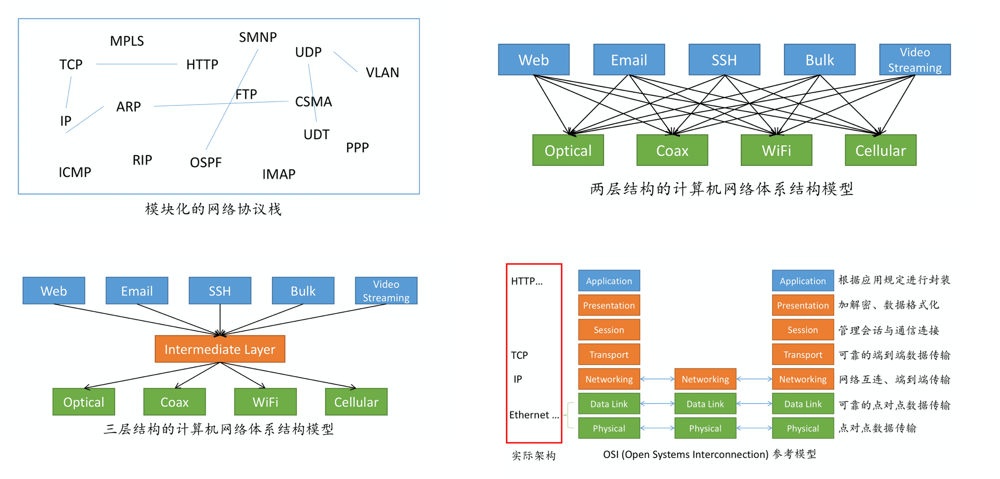
细腰结构（narrow-waist）是互联网体系结构模型中最典型的特征。研究表明，分层的体系结构最终会演化成细腰模型，互联网体系结构一直在演进中，现有结构可能会演化成新的细腰模型。
直连网络性能指标：带宽（Bandwidth）和时延（Latency）= 传播时延+处理时延+排队时延。
数据帧封装：添加首部和尾部界定帧的范围。
引入转义字符进行透明传输。
差错检测：奇偶检验、检验和 checksum、循环冗余校验（Cyclic Redundancy Check, CRC）。CRC 的本质是 Hash 函数。
可靠传输基本思想：确认（acknowledgment, ACK）ACK 帧、超时（timeout）重传。
停等（Stop-and-Wait）协议：最简单的可靠传输协议。
提升传输速率：序列号（Seq）
滑动窗口
滑动窗口算法（Sliding-window） ：可靠传输、高效传输、按序到达、流控功能。
- 接收端：对于每个新到达的数据帧 Seq：如果 LastFrame < Seq <= ExpMaxFrame，则接受；否则，丢弃。接受数据帧后，将收到的最大连续数据帧 Seq 作为 ACK 回复。
- 发送端：收到新的 ACK，更新 LastACK，如果窗口允许，发送新的数据帧，更新 LastFrame。
回退 N 机制（Go-Back-N）恢复丢包。只需要保证 MaxSeq/2 >= Wnd，就可以准确区分已接收和等待确认的数据帧。
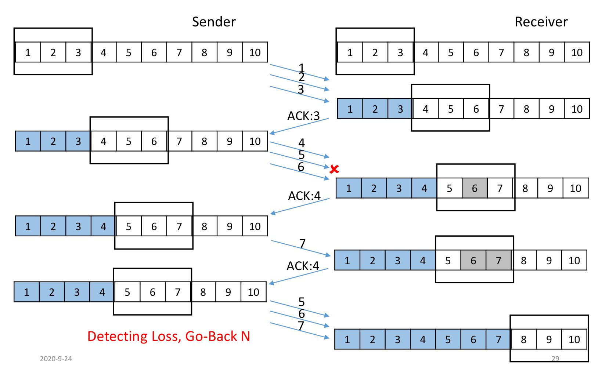
多路复用
多路复用技术：频分复用（Frequency Division Multiplexing, FDM）、时分复用（Time Division Multiplexing, TDM）、统计时分复用（Statistic TDM, STDM）、码分复用（Code Division Multiplexing, CDM）。
载波帧听多路访问（Carrier Sense Multiple Access, CSMA）
带碰撞检测（Collision Detection）的 CSMA (CSMA/CD)，用于 Ethernet。
带碰撞避免（Collision Avoidance）的 CSMA (CSMA/CA)，用于 无线局域网络，例如 WiFi。
以太网
以太网：MAC 地址，以太网基本上统治了有线局域网。
WiFi
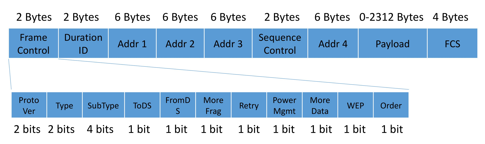
接入 WiFi 热点：
- 扫描：Probe 和 Probe Response 帧
- 关联：Association Request 和 Association Response 帧
- IP 地址分配：DHCP
- 认证
蜂窝通信
1G 蜂窝通信是为语音通信设计的模拟 FDM 系统，几乎不支持数据传输。
蜂窝通信网络是覆盖范围最广的通信机制之一。
5G
毫米波技术、信道编码技术、大规模 MIMO、海量连接、低延迟技术、网络切片。
第三讲 网络互连
第二讲到第六讲，都由中国科学院计算技术研究所网络技术研究中心的武老师进行讲授。
第三讲主要讲交换网络、网络互连和数据包队列。
交换网络的设计目标是数据只朝着目的节点方向传送（转发，Forward）。
数据帧转发：给定一个包含源目的 MAC 地址的数据帧，如何确定从哪个端口转出?
- 交换机存储目的 MAC 地址到（出）端口的映射关系（Forwarding Database, FDB）。
- 对于每个数据帧，在 FDB 中查找目的 MAC 地址对应的端口号进行单播或广播。
- 老化机制（Aging）更新 FDB。
- 每收一个新的数据帧，记录其源 MAC 地址和入端口，将该映射关系写入 FDB 表。
生成树（Spanning Tree）消除广播风暴。
IPv4
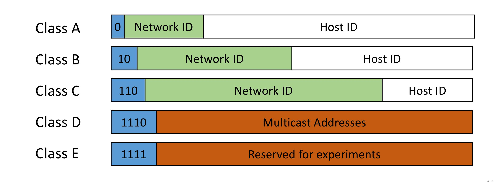
无类别域间路由（Classless Inter-Domain Routing, CIDR）：前缀（prefix）长度、网络掩码（network mask）。CIDR 可更加充分的使用 IP 地址。
IP 数据包头部格式：
- Length：IP 数据包长度，最大为 65535 字节
- Protocol：标识所承载协议类型，例如 TCP: 6, UDP: 17
- Source & Destination Address：源目的 IP 地址
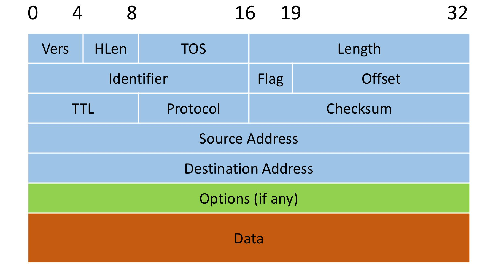
IP 报文转发：路由器讲转发信息存储在转发表中（Forwarding Information Base），网络号和下一跳。
地址解析协议（Address Resolution Protocol, ARP）：知道下一跳 IP 地址，查询其 MAC 地址。ARP 只作用于局域网。
IP 分片（Fragmentation）：最大传输单元（Maximum Transmission Unit, MTU）。
互联网控制消息协议（Internet Control Message Protocol, ICMP）：通过发送错误代码、控制信息等来诊断和控制网络。
NAT（Network Address Translation）
IPv6：128 位。
以太网地址转换为 IPv6 地址：
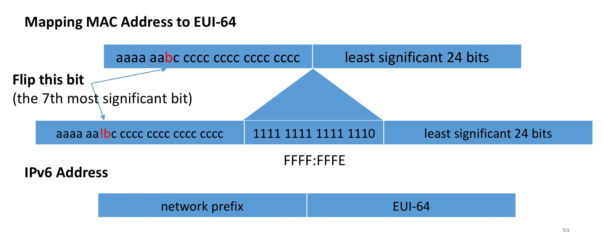
IPv4 地址到 IPv6 地址的映射
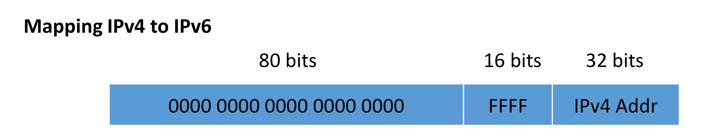
1. TCP/IP 网络面临的问题及其本质原因？
从根源分析可以简单分为 3 类问题：
（1）流量激增问题
- 互联网流量爆炸
- 流量增长速度远远高于芯片处理性能增长速度
- 增加带宽并不能从根本上解决问题
- 本质原因
- 业务的繁荣
- 数据的重复传输
IP 流量在 5 年（2012-2017）时间里增长了 4 倍，预计未来 5 年增长 3 倍。
访问频率重尾特效：少量内容被多次重复访问。
端到端特性：路由器只负责转发，并不知道重复传输。
CDN 并不能重根本上解决问题。
（2）移动性支持问题
<sIP, dIP, sPort, dPort, protocol> ：断开连接，重新建立连接。
- 端到端连接绑定了地址，移动过程切换地址：断开连接，应用层重新建立连接，服务质量下降
- 本质原因：
- IP 地址的二义性：既想表示位置，又想表明身份。
- 不支持地址和身份的动态绑定。
（3）可管可控问题
- 安全问题
- 网络攻击和信息安全事件频发
- IP 网络以传输为功能，能保证传输通道安全，不能保障数据的安全
- IP 设计之初场景是安全的
- 管理和控制问题
- 人工网络配置复杂
- 缺乏一个独立的配置平台
2. TCP/IP 网络如何支持节点的移动？
IP 地址的两个职责：
- 标识符（Identifier）
- 定位符（Locator）
2.1 Mobile IP 的技术思路：
-
假设移动主机有一个永久的 IP 地址
-
称为本地地址 (home address)，作为 identifier
-
与移动前的网络拥有相同前缀
-
-
主机移动到新的网络时
- 获得新的 IP 地址，作为 locator
- 两个地址可以共存
locator 负责接收数据，identifier 负责解复用数据。即移动前 locator 和 identifier 地址相同，移动后一收一发。
2.2 Mobile IP 技术方案
- 移动主机（Mobile Node）：分配一个永久的本地 IP 地址。
- 本地代理（Home Agent）：位于移动主机的本地网络，维护本地地址到转交地址的映射。
- 外地代理（Foreign Agent）：在本地代理与移动主机之间转发数据，周期性向外通告提供转交地址。
- 转交地址（Care-of-Address）：表示移动主机的位置，通常是外地代理的地址
- 对端主机（Correspondent Node）
数据发生到移动主机过程：
（1）本地代理截取目标为移动主机的数据
（2）本地代理将数据发送到外地代理
（3）外地代理将数据传送到移动主机
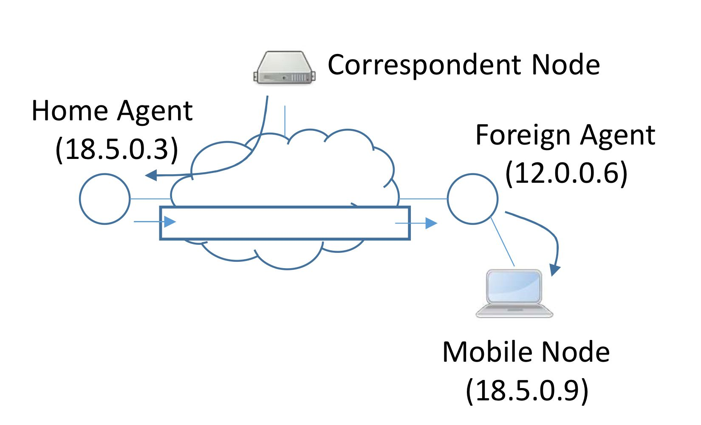
移动主机注册过程：
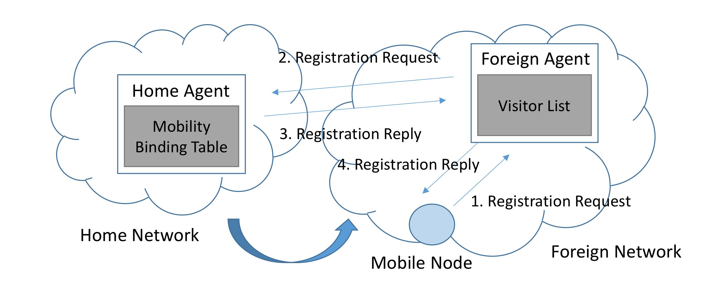
2.3 节点移动
- NDN：带状态、hop-by-hop 数据传输
- MobileFirst：面向移动的体系结构。关键是 GUID（全局唯一 ID） 到 NA（网络地址）的映射。
- FOFIA：服务标识（SID）和网络标识（NID）。
- XIA：支持多种结构并存。
3. 未来互联网体系结构试图改变思路是什么?
核心：naming, addressing
- 解决主机和位置关联
- 解决三个关联问题
4. 新旧互联网过渡的方法有哪些?
过渡机制
- 问题分解
- SOFIA 穿越到 IP
- IP 网络通过 SOFIA 网络连接
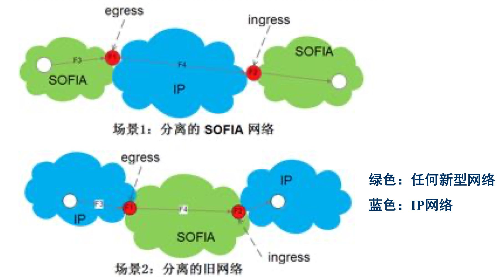
5. 网络内缓存存在的双体问题指什么?
In-Network cacheing
网络内：路由、交换设备具有缓存内容的功能
网络外：CDN 服务器
核心区别：网络内缓存的双体问题（转发和缓存相互影响）
6. 比较 IPv4、IPv6、NDN、SOFIA、XIA
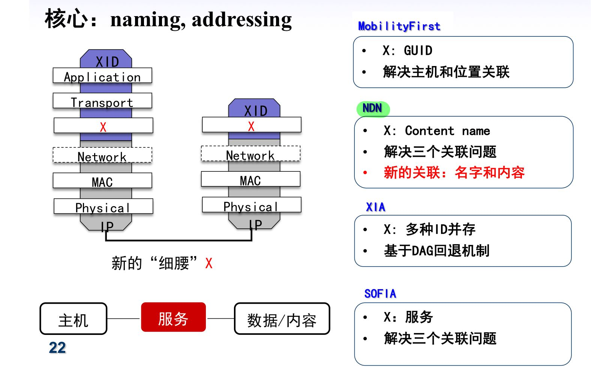
3.1 NDN
- 带状态网络，使得实现和维护复杂
- 路由表规模庞大，查找困难
- 交互式应用支持
3.2 MobileFirst
- 复杂！
- 全局映射（CUID 到网络地址 NA）是瓶颈
- 网络不保存连接状态
- 使用 NA 加快数据转发
3.3 SOFIA
-
结合了 NDN/MobilityFirst 和 IP 的特性。
-
支持不同种类的应用（如实时通信）
-
网络仍是无状态的
-
路由表面临与 NDN同样的拓展性问题
3.4 XIA: Expressive Internet Architecture
- 支持多种体系结构的体系结构
- 包头需要压缩
- 支持体系的演进
7. 安全问题如何通过未来互联网解决？
- AIP：Accountability IP，问责制，网络和主机使用自验证（self-certifying）地址，公钥。
- 网络上的任何一个数据包最终都能追溯到主机（个人）。